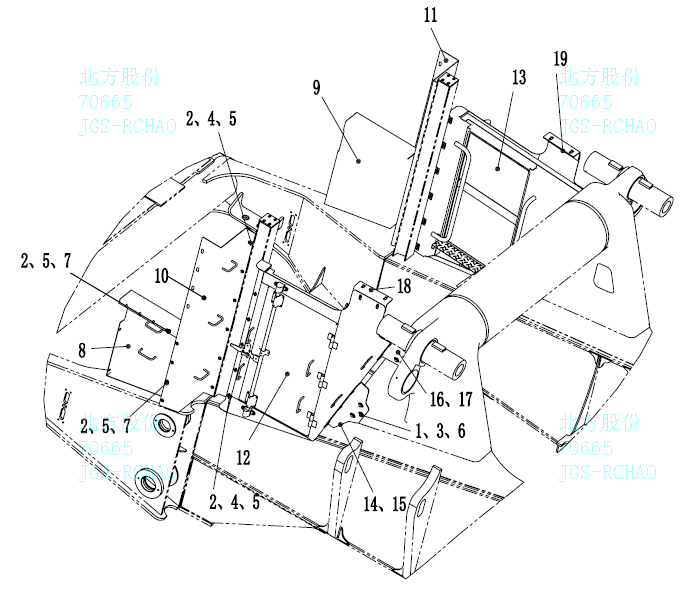

Обшивка двигательного отсека
| 1. | пружинная шайба | 8. | левая передняя крыльевая сборка | 15. | правое нижнее крыло |
| 2. | плоская шайба | 9. | правая передняя крыльевая сборка | 16. | левое верхнее крыло |
| 3. | плоская шайба | 10. | левая крыльевая сборка | 17 | правое верхнее крыло |
| 4. | пружинная шайба | 11. | правая крыльевая сборка | 18 | левая верхняя крыльевая сборка |
| 5. | болт | 12. | левая дверная сборка | 19 | правая верхняя крыльевая сборка |
| 6. | болт | 13. | правая дверная сборка | 20 | |
| 7. | гайка | 14. | левое нижнее крыло | 21 |
Рис. 1 Обшивка двигательного отсека
Обшивка двигательного отсека Описание и местоположение
Обшивка двигательного отсека покрывает область от нижней части платформы и задней части обшивки до передней части рамной балки, защищая двигатель и сопутствующие компоненты.
Операция
Обшивка двигательного отсека имеет две функции:
1. Защита двигательного отсека от попадания посторонних предметов и предотвращение повреждений от окружающих объектов.
2. Обеспечение удержания тепла внутри двигательного отсека.
Ремонт и регулировка
Проверьте, все ли кронштейны и болты надежно закреплены, а также что сборка не повреждена и находится в исправном рабочем состоянии.
Демонтаж
Следуйте следующим шагам для демонтажа обшивки:
1. Отсоедините соответствующие кабели.
2. С помощью подходящего подъемного оборудования (трос, кольцо и т. д.) подсоединитесь к изогнутой панели двигательного отсека.
3. Снимите болты и шайбы, которыми обшивка двигательного отсека крепится к кожуху.
4. Снимите болты и шайбы, которыми обшивка двигательного отсека крепится к раме.
5. Снимите болты и шайбы, которыми обшивка двигательного отсека крепится к платформе.
6. Поднимите обшивку двигательного отсека и разместите ее в подходящем рабочем месте.
Ремонт
Ремонт обшивки двигательного отсека включает в себя следующие шаги:
1. Ремонт или замена поврежденных металлических деталей.
2. При необходимости производится ремонт или замена.
Монтаж
Следуйте следующим шагам для установки сборки обшивки:
1. Поднимите обшивку двигательного отсека из рабочей зоны и выровняйте её с соответствующими монтажными отверстиями на платформе и раме.
2. Используя болты и шайбы, закрепите обшивку двигательного отсека к платформе.
3. Используя болты и шайбы, закрепите обшивку двигательного отсека к раме.
4. Снимите трос с крана с обшивки двигательного отсека.
5. Повторно подсоедините ранее снятые стандартные детали.
5
Иллюстрации
